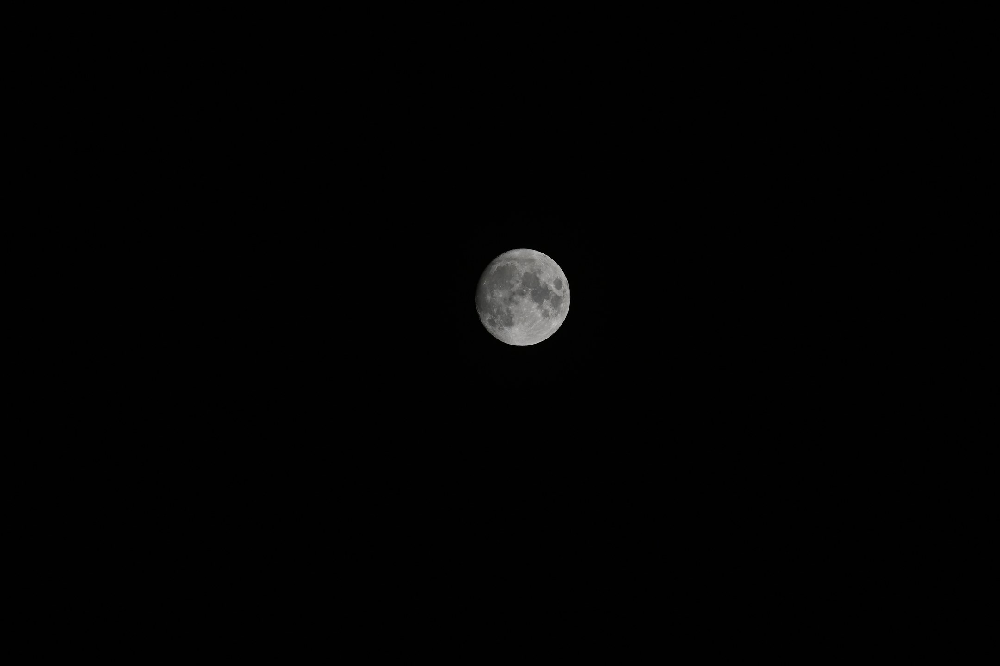

KOYAMARIUM / PORTFOLIO
小山 洋
宇宙を考え、言葉と計算で届ける。
宇宙物理の研究、記事と本、公開教材、写真。小山 洋の活動と作品を紹介します。

Nikon Z50 · NIKKOR Z DX 50–250mm f/4.5–6.3 VR
250mm · f/6.3 · 1/800秒 · ISO 100
撮影：2021年9月19日 21:07:35（日本時間）
数値計算・熱的不安定性の研究相談自分のLLMで相談する →
研究プロフィール
お問い合わせ
ご質問・ご感想、ご相談はこちらへ。
koyamarium@gmail.com
クリックするとメールアプリが開きます。